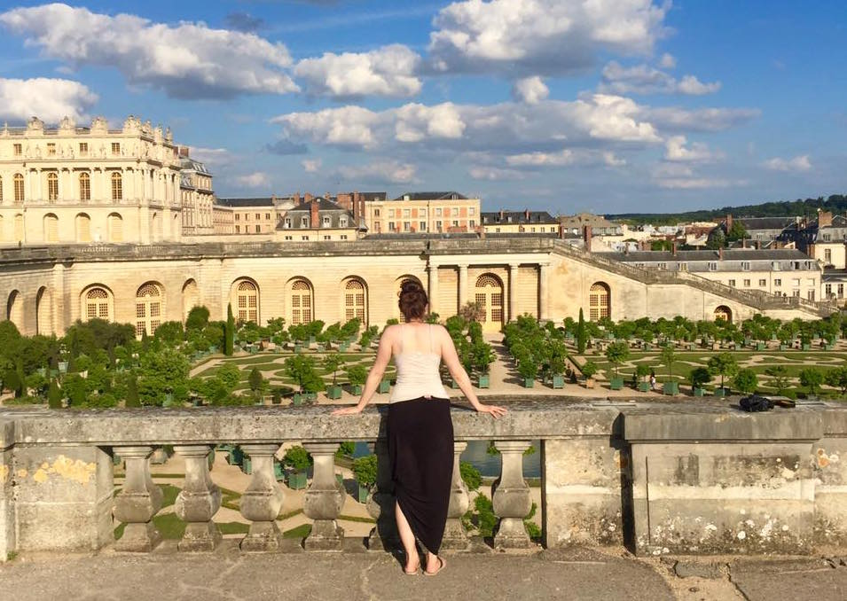

The most interesting aspect of design for me, is the storytelling. I grew up in Albuquerque New Mexico, so I am obsessed with green chile, turquoise feels like home, and the International Balloon Fiesta is my favorite time of year. I search for inspiration in other cultures, and try to connect our differences as human beings. It’s easy to take design too seriously, so I won’t miss an opportunity to add humor to my work.
I've always believed in being weird.

CHECK OUT MY RESUME